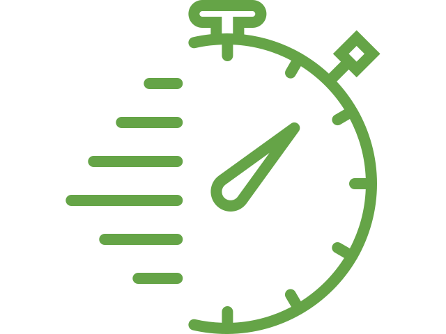

Технология
Что такое СИП?
Структурно-изолированная панель (СИП) — это современный высококачественный строительный материал для жилых домов и небольших коммерческих строений. Панели представляют собой «сердцевину» из пенополистирола, зажатую между двумя структурными блицовками. Как правило, это ориентированно-стружечная плита (ОСП, англ. oriented strand board, OSB).
СИП изготавливаются в заводских условиях, под контролем и могут быть изготовлены , чтобы соответствовать практически любой конструкции здания.
В результате получаем черезвычайно крепкий, энергосберегающий и экономически bвыгодный дом. Изготовление знания из СИП сэкономит время, деньги и труд.
 Насколько быстрее строить из СИП?
Строительство СИП-домов гораздо быстрее, чем традиционных каркасных или кирпичных (блочных) зданий. Квалифицированные строители могут съэкономить до 55% времени, по сравнению с традиционным каркасным строительством. Панели изготавливаются необходимой формы и размеров, а это значит, что на строительную площадку они приходят в готовом к установке виде.
Сколько я могу сэкономить?
При постройке дома из СИП вы экономите на снижении строительных и трудовых затрат. Но основная экономия начинается при эксплуатации дома. Ежемесячные счета за энергоресурсы в отопительный сезон у владельцев энергосберегающих домов из СИП панелей в несколько раз меньше, чем у соседей. А наблюдать, как твой комфортный дом довольно быстро окупается за счет экономии на энергопотреблении, очень приятно.
Учитывая эти и другие факторы можно говорить о более чем 45% экономии.
Насколько экологичны дома из СИП?
СИП — одна из самых экологически ответственных строительных технологий. СИП оболочка здания обеспечивает непрерывную изоляцию. СИП очень герметичны и позволяют лучше контролировать качество воздуха в помещении. Строительные отходы при возведении дома из СИП минимальны.
Дома из СИП имеют огромное положительное влияние на окружающую среду за счет снижения потребления энергии и выбросов парниковых газов на протяжении всего жизненного цикла дома.